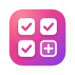

Playlist Multi-SaveSave a video to several playlists at once, from a wide grid you can search and sort.

Playlist Multi-SaveSave a video to several playlists at once, from a wide grid you can search and sort.
The download installs from a folder on your computer instead of the Chrome Web Store. It takes about a minute.
Click Download, then unzip the file. On Windows, right-click it and choose Extract All. On a Mac, double-click it. Keep the folder somewhere it can stay, like Documents: Chrome loads the extension from it every time it starts.
Type chrome://extensions in the address bar and press Enter.
It's the switch in the top-right corner of the page.
Choose the folder you unzipped, the one with manifest.json in it. The extension appears in the list.
Click the puzzle-piece icon in Chrome's toolbar and pin the extension. Then refresh any open tabs of the sites it works on.
The cutting and downloading is done by a small helper app on your computer. Install it before step 2.
Windows (needs Python 3.10 or newer): open the unzipped folder, right-click an empty spot, choose Open in Terminal, and run:
powershell -ExecutionPolicy Bypass -File host\install.ps1Mac (needs Homebrew): open Terminal, type bash and a space, drag install.sh from the host folder inside the unzipped folder into the window, and press Return.
In step 4, choose the extension folder inside the unzipped folder.
Updating: unzip the new version over the old folder, then click the reload icon on the extension's card in chrome://extensions. Edge, Brave and other Chromium browsers work the same way, from their own extensions page.